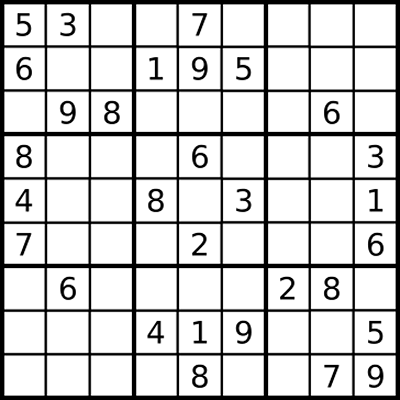
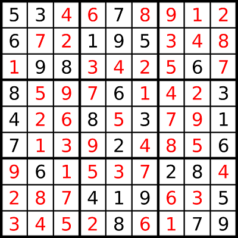

Cho ma trận Sudoku với kích thước 9x9 như hình vẽ.
 
Luật chơi khá đơn giản. Với các ô đã cho trước ở hình 1, bạn hãy điền vào tất cả các ô còn lại trong ma trận sao cho trên các dòng, luôn xuất hiện tất cả các số từ 1 đến 9, tương tự, trên các cột và trong 9 ma trận nhỏ 3x3 cũng phải xuất hiện tất cả các số từ 1 đến 9 (như trong đáp án ở hình 2).
Yêu cầu: Cho ma trận kích thước 9x9, các ô trống được biểu diễn bằng chữ số 0, còn các ô chứa số cho trước thì biểu diễn chính số đó. Hãy xuất ra ma trận đáp án.
Dữ liệu nhập: Là ma trận 9x9, mỗi số trên một dòng cách nhau một khoảng trống, chứa các số từ 0 đến 9. Trong đó các số 0 là ô trống cần tìm. Dữ liệu đề bài cho đảm bảo là hợp lệ (không có 2 số giống nhau trên cùng dòng, cùng cột hay cùng ô vuông 3x3 nhỏ).
Dữ liệu xuất:
- Nếu không có đáp án in ra một số duy nhất là -1.
- Nếu có đáp án, in ra ma trận 9x9 của trò chơi, các số trên một dòng cách nhau một khoảng trống. Nếu có nhiều đáp án, chỉ cần xuất một đáp án bất kỳ.
(Nguồn: VietNamVoDich)